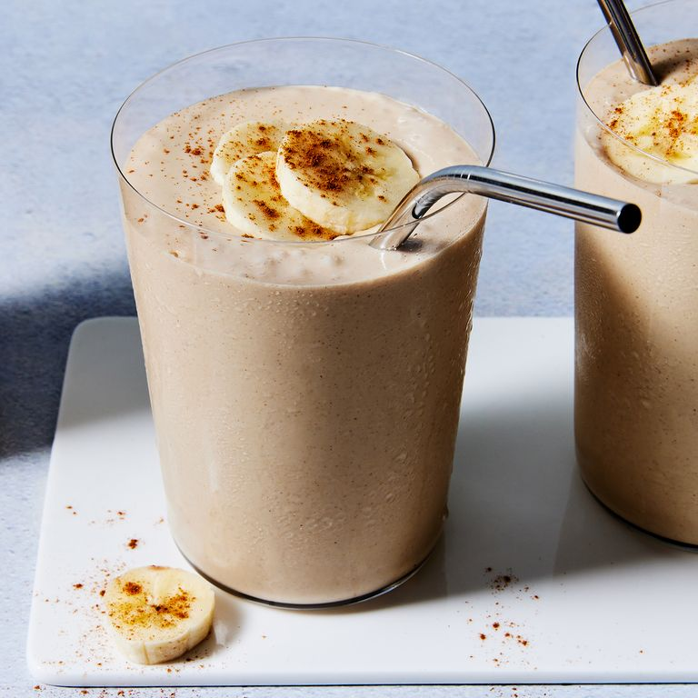

Smoothies are one of the easiest and best ways to ensure you are having the most important meal of the day: breakfast. Tossing fruit in a blender beats cooking and washing dishes (and that's coming from people who cook for a living). With this easy recipe, all you need are a few staple pantry ingredients and 5 minutes, you'll have a versatile, filling, and quick breakfast on your hands to kickstart your morning.
The best thing about smoothies? They're totally adaptable. Follow our recipe here for our basic, best-ever peanut butter and banana smoothie.